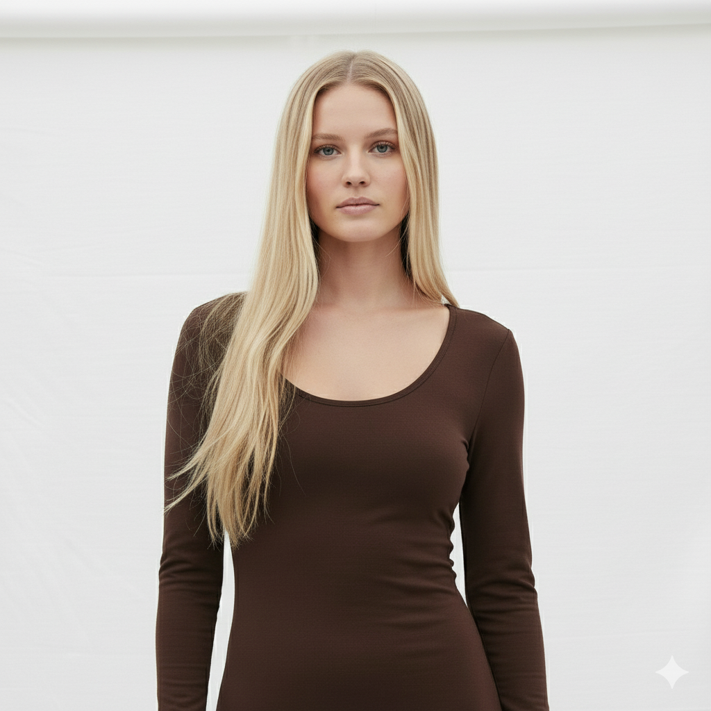
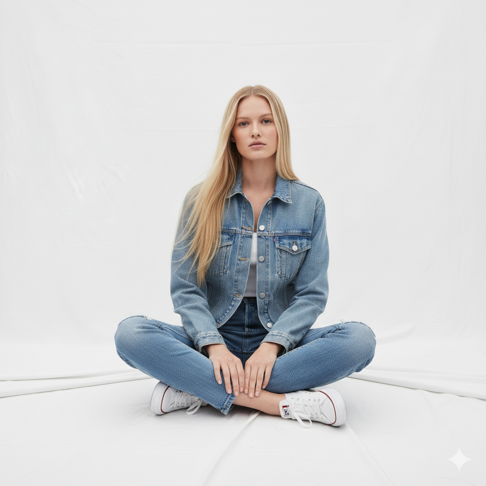
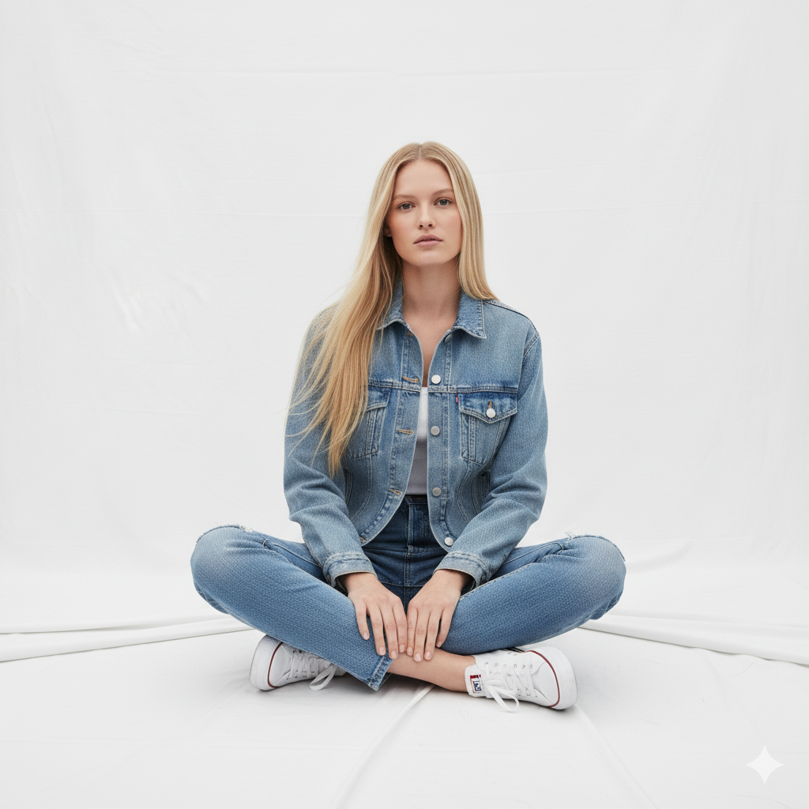
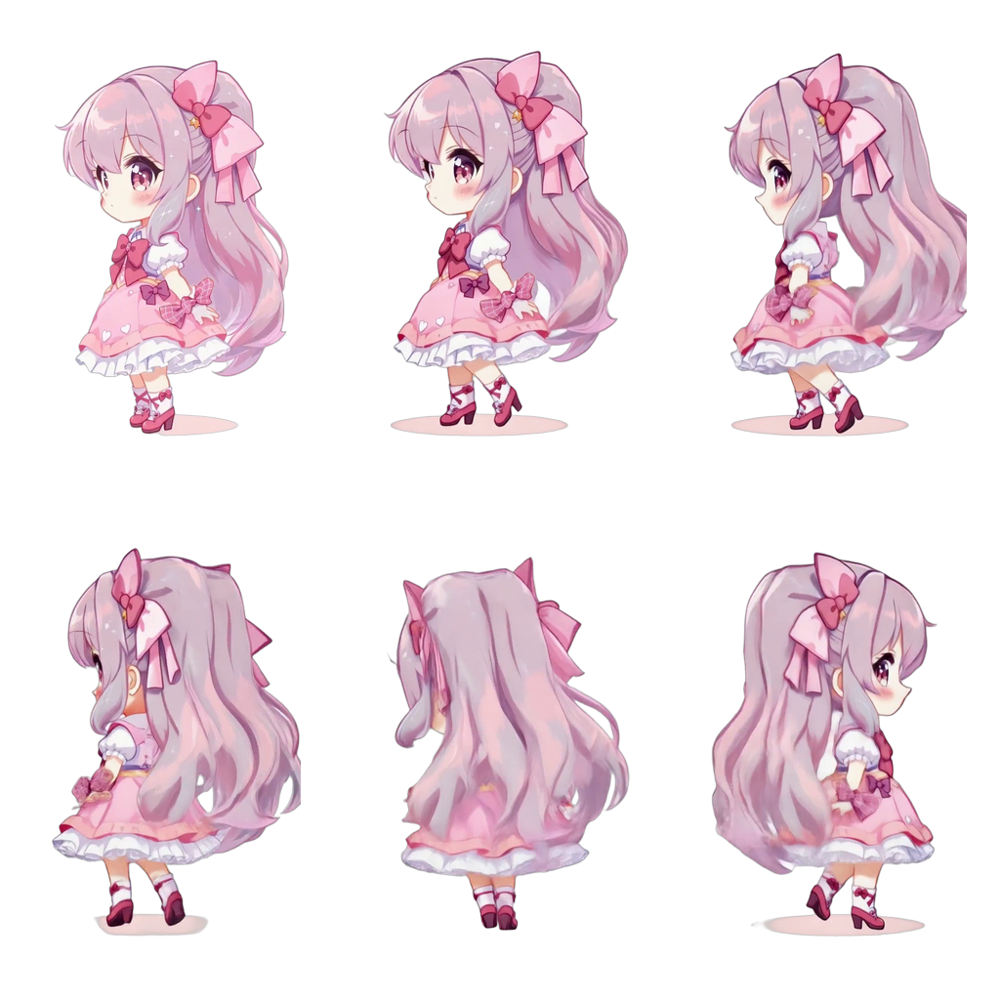

Consistent Character Across Multiple Scenes
We used generative AI models to maintain a consistent character design across various scenes. By leveraging advanced models, we ensured the character stays true to its features while exploring different looks, poses, and outfits. Whether it's a formal attire, casual wear, or a specific action pose, the AI adapts the character’s appearance while keeping the essence intact. This approach highlights the flexibility of generative AI in preserving identity across diverse scenarios, making the character both versatile and instantly recognizable.

 

Architectural Visualization Demo: Personalized 3D Video Creation
In this project, I developed a system that allows users to transform static images of their apartment into dynamic 3D videos with custom camera movements and personalized elements. The process is straightforward and user-friendly, offering a range of customizable features:
- Images of the Apartment: Users upload photos of their apartment or interior design.
- Camera Motion Preferences: Users specify the desired camera motion or path for each image to create a smooth, cinematic effect.
- Background Text: The user can input text that will be displayed in the background of the video, enhancing the narrative.
- Voiceover: Users can select the voice they prefer for the background narration, providing a personalized touch.
- Email for Final Video Delivery: The system sends the final video to the user's designated email address.
- Image Editing Options: Users can remove distractions like cars or people from the uploaded images for a cleaner, more focused scene.
- Model Selection: Users can choose the model they want to use for generating the video, offering flexibility in style and presentation.
- Resolution Choice: Users can select the resolution they want for the final video, ensuring it meets their quality preferences.
- Company Logo Integration: Users have the option to add their company logo to the video, giving it a professional branding touch.
- Watermark Option: A watermark can be added to the video for copyright protection or branding.
- Image Replacement: If desired, users can replace images with different ones, allowing them to refresh or update their visuals.
- Video Order Customization: Users can rearrange the order of the images/videos, tailoring the sequence to their preferences.
final_archi_demo.mp4
final_archi_demo_video.mp4
AI-Generated Ad Creation with Veo3
This project focuses on creating AI-generated advertisements using a fully automated generative video pipeline. The system combines scriptwriting, lip-syncing, and AI voice synthesis to produce high-quality, realistic ad videos from scratch.
Key Features and Workflow:
- Script Generation: The process begins with AI-driven scriptwriting that creates compelling ad narratives tailored to the desired message or brand tone.
- Video Generation with Veo3: The generated scripts are transformed into lip-synced videos using Veo3, ensuring expressive facial movements and natural dialogue delivery.
- Voice Enhancement with ElevenLabs: The videos are enhanced with realistic voiceovers from ElevenLabs, improving tone consistency and emotional depth.
- Lip-Sync Integration: The ElevenLabs audio is perfectly synchronized with Veo3’s visuals, achieving seamless lip-sync and natural pacing.
- End-to-End Ad Production: The pipeline outputs a polished video ad, ready for use across digital platforms.
Outcome:
The final result is a fully AI-generated advertisement featuring realistic characters, natural dialogues, expressive lip-syncing, and consistent voice performance. This project demonstrates the power of multimodal generative AI — integrating text, audio, and video — to automate creative production pipelines for marketing and storytelling.
labs.mp4
QF5Dsf846SQCfVy6UYh7k_output (1).mp4
AI-Powered Sprite Sheet Generator
This project focuses on automating the process of sprite sheet creation using generative AI and user-driven customization. It enables artists, developers, and creators to generate and refine character sprites efficiently — from single images to complete animation-ready sheets.
Key Features and Workflow:
- Image Generation or Upload: Users can either generate a base image using text prompts or upload their own image as a starting point.
- Image Editing: Once the image is generated, users can make adjustments — such as refining poses, changing backgrounds, or enhancing visual elements — before finalizing it.
- Animation Type Selection: After finalizing the image, users can choose the type of sprite animation they want to create — Run, Walk, or Static.
- Frame Generation: The system then generates multiple image frames corresponding to the chosen animation style.
- Frame Selection: Users can preview and select their preferred frames from the generated set.
- Sprite Sheet Compilation: The selected frames are automatically arranged into a well-formatted sprite sheet, ready for integration into games, animations, or creative projects.
Outcome:
The final output is a custom sprite sheet that captures consistent character design and smooth animation frames. This project demonstrates how generative AI can streamline asset creation, reducing manual effort while maintaining artistic control and flexibility.
video-93a27304-0ecb-432c-9c99-bb401bf30dd5.mp4
kling_20250823_Image_to_Video_anime_girl_4909_0.mp4

AI-Generated Product Ad Videos (Text-to-Video Workflow)
This project focuses on a complete, end-to-end workflow for creating product advertisements using a multi-step generative AI pipeline. The system automates the creative process from initial concept to final video assembly, resulting in polished, ready-to-deploy product ads.
Key Features and Workflow:
- Script Creation: The workflow begins with the creation of a compelling ad script, generated by an AI model tailored to the specific product and marketing message.
- Image Generation: Based on the script's visual descriptions, high-quality, product-focused images are generated using a text-to-image model. These images serve as the key visual elements for the video scenes.
- Video Generation: The static images are then transformed into dynamic video segments, applying custom camera movements and animation effects to bring the visuals to life.
- Video Stitching and Assembly: Multiple video clips and segments are merged and edited together to form the final, cohesive advertisement sequence, ensuring smooth transitions and narrative flow.
- Final Output: The result is a professional-grade product advertisement, demonstrating the capability of generative AI to handle complex, multi-stage creative production.
merged.mp4
labs.mp4
AI-Generated Animated Movie Shorts (1-2 Minutes)
This project showcases an automated pipeline for creating short animated movies (1-2 minutes in length), placing a strong emphasis on maintaining character and stylistic consistency throughout the entire narrative. The workflow leverages the efficiency of generative AI models, mirroring the multi-stage production process used for generating ads and other video content.
Core Objective: To produce short, narrative-driven animated films with high character fidelity and smooth, cinematic flow.
Key Features and Workflow (Adapted for Film):
- Scriptwriting & Storyboarding: The process starts with an AI-driven script and initial storyboard creation, defining the scene actions, dialogue, and overall visual narrative structure.
- Consistent Character Generation: Using advanced generative models, the primary character is created and maintained across all scenes, ensuring features, proportions, and style remain consistent regardless of pose, expression, or background change.
- Scene-Specific Image/Video Generation: Based on the script and storyboard, high-fidelity scene visuals (both static images and dynamic video clips) are generated, focusing on world consistency and artistic style.
- Voiceover & Dialogue Synthesis: Realistic voiceovers and character dialogues are generated using high-quality text-to-speech models, which are then integrated and synchronized with the visuals.
- Editing and Cinematic Assembly: All generated clips and audio tracks are stitched together, adding necessary transitions, effects, and music to create a cohesive, finished 1-2 minute animated movie short.
Outcome:
The result is a fully realized, short animated movie that demonstrates the capability of generative AI to handle complex, long-form creative projects while successfully solving one of the biggest challenges in AI animation: character consistency over extended sequences.
george washigton.mp4
The promise unkept.mp4